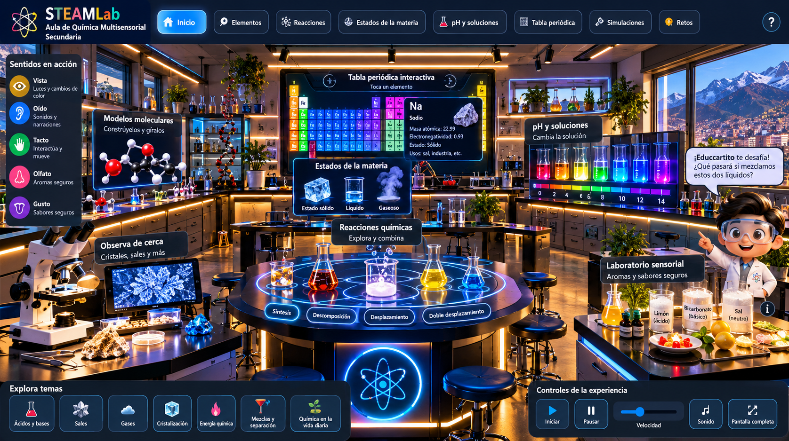

STEAM
Lab
· Química multisensorial
Cuaderno N.º 09 · Secundaria · Estaciones del pH sin olores
♫ Sonido: sí
✦ Luces: sí
Ⅱ Pausar
Velocidad
⛶ Pantalla completa

Falta el archivo laboratorio.png. Súbelo junto a index.html.
Moléculas
Elementos
Escala pH
Mezclas
Microscopio
Sentidos
Toca uno de los seis círculos luminosos para explorar.